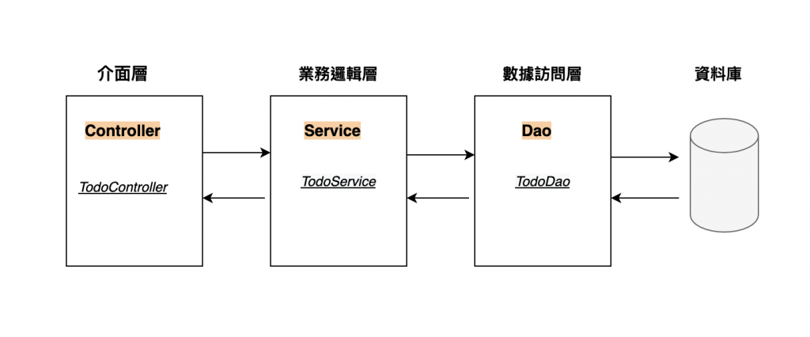
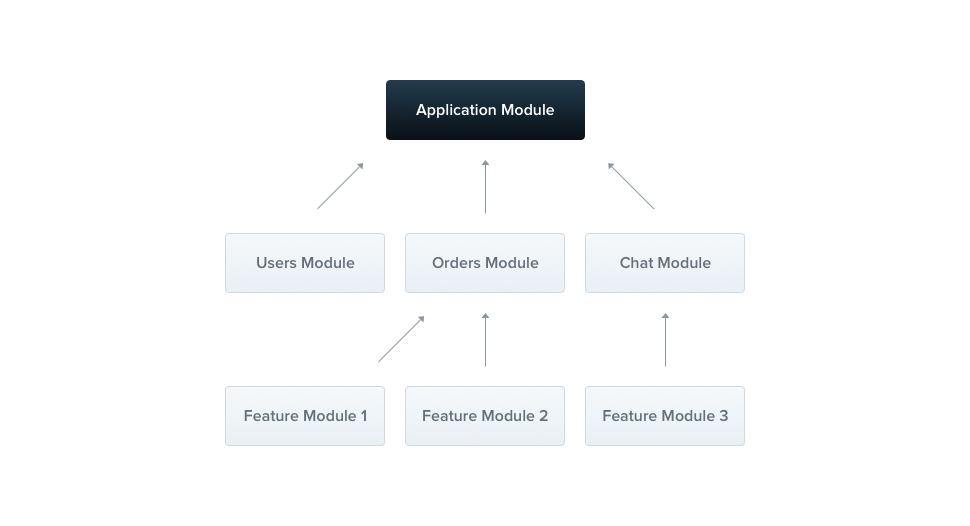

# [NestJs] 一個完整且優雅的 NodeJs Server 解決方案方法
# 前言
一直以來，使用 NodeJs 進行 backend 開發，大家最常使用 ExpressJs 或是 Koa 直接開始。然而 ExpressJs, Koa 這類的 NodeJs 框架都是標榜輕量、好設定。在實務上各家公司都會自行搭建各自的專案架構、商業邏輯。
而不同公司的專案依照各公司的生態與業務就會生出截然不同的專案架構。如果幸運一點，公司有大神前輩，專案的架構可能就還能維持得不錯；然而更多的是許多中小企業的專案因為缺乏規劃與維護，整個專案根本各種「放飛自我」。
一直以來我都在尋找是否有一款 NodeJs framework 可以整合 nodeJs 後端生態系的專案架構，就像 React 與 Vue 一樣，於是 NestJs 就這樣映入我的視野。
# 簡介
NestJs 是一款結合了許多後端常使用的 Design Pattern 諸如 OOP (Object Oriented Programming), FP (Functional Programming), and FRP (Functional Reactive Programming), DI (Dependency Injection)，並且默認使用 Typescript 的高效、易擴展的 NodeJs 漸進式框架。
NestJs 在框架層面設下了許多規範，例如要求使用 Dependency Injection 方式利用各個 module。並且預設就分配好 controller, service, module 等區塊、大量使用 Typescript 的 dectration 來精簡化程式... 等等。這讓 NestJs 的專案架構趨於一致且穩定。
# NestJs 專案架構
這篇文章我不想花費篇幅在介紹如何安裝 NestJs 專案。這些在網路上已經充斥大量的入門教學。詳細開箱可以直接查看官網 我將著重在講解 NestJs 預設的專案架構，以及核心的那幾支 ts 是在幹什麼用的。
在專案創立後，我們可以看到專案結構如下
|- src
| |- app.controller.spec.ts
| |- app.controller.ts
| |- app.module.ts
| |- app.service.ts
| |- main.ts
|- test
| |- app.e2e-spec.ts
| |- jest-e2e.json
|- ...
映入眼簾的是 src 中關於 app 的三支檔案 app.controller.ts , app.module.ts , app.service.ts 。另外會看到 main.ts 這支是整個程式的入口。
首先我們先有個簡略的瞭解，NestJs 使用的是 Controller -> Service -> Dao 的三層式架構

由 Controller 層作為 API 的 Entrypoint；依序在 Service 層調用能夠操作 Database 的 Dao 進行業務處理。
因此順著這個架構，我們就可以來理一理這幾支程式幹了些什麼。
# main.ts
import { NestFactory } from '@nestjs/core'; | |
import { AppModule } from './app.module'; | |
async function bootstrap() { | |
const app = await NestFactory.create(AppModule); | |
await app.listen(3000); | |
} | |
bootstrap(); |
AppModule 是整個專案的 Root Module.

以官網的示例圖來講解，module 可以再 inject 其他的 modules，因此整個 NestJs 專案都是以 module 為單位建構起來的。
# app.module.ts
接下來看到這支程式
import { Module } from '@nestjs/common'; | |
import { AppController } from './app.controller'; | |
import { AppService } from './app.service'; | |
@Module({ | |
imports: [], | |
controllers: [AppController], | |
providers: [AppService], | |
}) | |
export class AppModule {} |
@Module 是 NestJs 提供的 dectorator。這個 decorator 扮演者舉足輕重的角色。其將自動將設定綁定到 AppModule ，使得我們不用額外寫半行 code 就完成 Dependency Injection。 imports 提供了注入口給予使用者注入自己寫的 modules 。被注入的 modules 會可以在 providers 中的 Services 使用。同時 providers 中提供的 Services 也會被注入 controllers 中的 Controllers 。
我們可以看一下 AppController 與 AppService 這兩支的使用方法，就可以大略瞭解。
# app.service
import { Injectable } from '@nestjs/common'; | |
@Injectable() | |
export class AppService { | |
getHello(): string { | |
return 'Hello World!'; | |
} | |
} |
在初始專案中，NestJs 很好心地已經定義了一個可以被呼叫的 function (Hello World) 給我們進行測試。
其中 @Injectable() 一樣是 NestJs 提供的 decorator。用途是告訴 NestJs 這個 Service 是可以被用來注入到其他的 provider。缺少這個 decorator，NestJs 就無法將此 class 注入到其他地方使用。
# app.controllers
import { Controller, Get } from '@nestjs/common'; | |
import { AppService } from './app.service'; | |
@Controller() | |
export class AppController { | |
constructor(private readonly appService: AppService) {} | |
@Get() | |
getHello(): string { | |
return this.appService.getHello(); | |
} | |
} |
在 controller 中，我們可以看到儘管我們並沒有在 AppController 的 instance 中顯式地將 AppService pass 進來，但是我們卻可以在 controller 中使用 this.appService 。
這就是利用了 module 中的 @Module decorator 做到的依賴注入。
到這邊，我們算是非常粗淺的瞭解了 NestJs 的專案架構。但是 NestJs 遠不止這些。
因此未來我會繼續整理 NestJs 這套 Framework 的使用心得與其他解釋。
預計下一篇會先做一個簡單的 CRUD 來試試手。